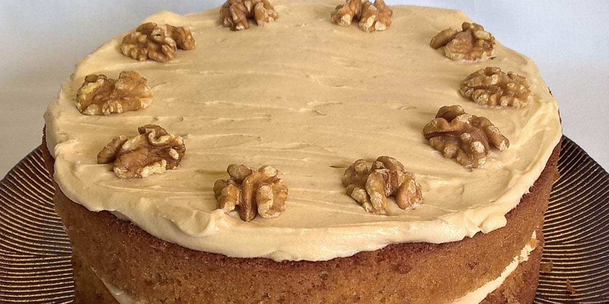

Coffee & Walnut Cake
Recipe Specification
Ingredients List
| Ingredients | Quantity |
|---|---|
| Unsalted Butter | 350g |
| Caster Sugar | 225g |
| Medium Eggs | 4x1 |
| Self-raising Flour | 225g |
| Walnuts | 75g |
| Icing Sugar | 200g |
| Esspresso Coffee | 100ml |
Yield: 8-10 portions
Preparation
- Grease and line 20cm round spring form tin.
- Sift self-raising in a bowl.
- Coarsely chop walnuts.
- Pre-Heat Oven to 170’C.
- Place 225g of butter in the microwave to soften for 20-30 seconds.
- Use an electric whisk to cream butter and caster sugar together.
- Once mixture is lighter and pale in complexion, whisk in eggs one at a time before adding 50ml espresso coffee.
- Add sifted flour and chopped walnuts before mixing on a slow speed until everything is incorporated.
- Pour cake batter into spring form tin.
- Soften the remaining 125g butter in the microwave for 15 seconds before sifting in icing sugar and adding the remaining espresso coffee. Whisk until smooth butter icing is made and then transfer to piping bag with a star nozzle attachment.
Cooking Instructions
- Place tin in the oven on middle shelf and cook for 25-30 minutes.
- Once cake is cooked, leave to cool to room temperature and the slice in half horizontally.
- Apply half the coffee butter icing to the middle of the cake and use the rest to decorate the top. Add whole walnuts to the top for decoration if wanted.

Serving Suggestions
Serve with cream and a cup of tea.
Storing instructions
Cover with clingfilm and place in the fridge. Consume with 4 days of making.